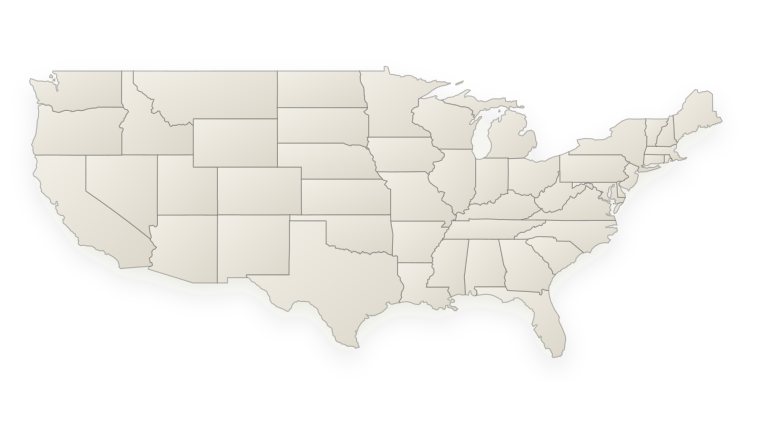

US
--
--
--
Consumer confidence forecasting
Weekly-updated consumer confidence forecasts for three representative markets: US, EU27, and Japan.
Weekly forecast update
--
--
--
Forecast explorer
--
Respondent simulation
Hover a state marker to inspect the profile and monthly response path.

Historical results
--
Historical methods
| Rank | Method | Family | Months | MAE | RMSE | Pearson |
|---|
Refresh protocol